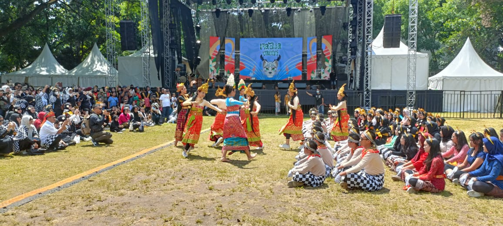

Festival Budaya 2025 “Ghawarnusa” SMAN 3 Bandung
Diposting: 6 Oktober 2025
Bandung - SMAN 3 Bandung kembali menggelar festival budaya tahunan bertajuk “Ghawarnusa” pada Oktober 2025. Acara ini menjadi ajang apresiasi budaya dan kreativitas siswa, sekaligus upaya pelestarian budaya Nusantara di lingkungan pendidikan.
Tema dan Konsep
Mengusung tema “Ghawarnusa” atau “Warna-Warni Nusantara”, festival ini menampilkan keberagaman budaya dari berbagai daerah di Indonesia. Acara ini menjadi simbol persatuan dalam keberagaman serta ajang ekspresi seni siswa SMAN 3 Bandung.
Rangkaian Acara
- Pawai Budaya - Menampilkan kostum adat dari seluruh Indonesia.
- Pentas Seni - Tarian tradisional, musik etnik, dan drama kebudayaan.
- Pameran Kuliner dan Budaya - Stan makanan dan informasi budaya dari berbagai provinsi.
- Lomba Kreatif - Desain poster, solo vokal lagu daerah, dan storytelling budaya.
Tujuan dan Harapan
PLT Kepala Sekolah, Dr. Ida Rohayani, S.Pd., M.Pd., menyampaikan bahwa festival ini bertujuan menanamkan rasa cinta terhadap budaya bangsa sejak dini:
“Kita ingin anak-anak muda sekarang mengenal, menggali, dan melestarikan budaya bangsa Indonesia.”
Antusiasme Peserta
Siswa, guru, dan orang tua turut ambil bagian dalam festival ini dengan penuh antusias. Ajang ini memberi ruang bagi siswa untuk mengeksplorasi potensi diri melalui seni dan kebudayaan.
Panitia berharap Ghawarnusa menjadi agenda tahunan yang lebih besar di masa depan dan melibatkan kolaborasi lintas sekolah serta komunitas budaya di Kota Bandung.